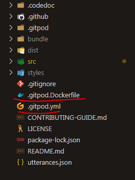

Gitpod. And the automation.
Back after a LONG time! We hit 100+ commits now! And this is a special blog.
Now, I love Visual Studio Code. Lots of extensions, built-in terminal emulator, and minimalistic. But the thing I HATE is that on my PC, it takes 10 minutes to load up. 10 MINUTES!? I would finish a basic Python file in 10 minutes. And I wanted access to my other PC too. So, I heard about code-server, which does that in a WHOLE NEW LEVEL. I can now code from my phone, or any device. But, it needed a Linux computer and my WSL loads the computer up and makes it slow. So, what did I do?
The same thing others do.
Find a simple, and easier solution.
Look, I don't hate code-server, it is that, for the --link flag which allows me to access it from any device with a link, it wants below 75ms which is NOT on my WSL. So, I ended up with Gitpod
Look, it is DAMN cool. It has a LINUX terminal running Focal Fossa. It is much faster, except, you need network. And, it supports Docker, PostgreSQL and more too!
And it has OPTIONS! GitHub login, connect your GitLab and BitBucket, choose between VS Code and Theia, and the most SAVAGELY coolest thing, Share.
I could COLLABORATE now!
But, I ended up with a problem. Every tie I write a blog here or somewhere else, I have to get CODEDOC or install Bundle, and serve the site. BIG headache.
But, then, I discovered this:
The Gitpod Dockerfile and configuration.
I feel like a god now.
First off, I needed an image. Frankly, Gitpod made a LOT of images on Docker Hub, but all I want is the fully-loaded workspace image. So, I will paste the entire layout of my repository on Gitpod here. Wait...

As you saw, there are two underlined files. The .gitpod.yml and the gitpod.Dockerfile. These are the MOST important files here.
Now, the .gitpod.yml is a config file. The Dockerfile is the file choosing the image.
And there is only ONE image I like.
This one:
1linkFROM gitpod/workspace-full
The FULLY LOADED workspace.
It gives you EVERYTHING you need. And that is just the Dockerfile. The entire Dockerfile I use is this:
1linkFROM gitpod/workspace-full
2link
3link# Install custom tools, runtime, etc.
4link
5link# RUN bash .gitpod/gitpodDockerfile.sh
6link
7link# RUN sudo apt-get install curl software-properties-common
8link# RUN curl -sL https://deb.nodesource.com/setup_16.x | sudo bash -
9link# RUN sudo apt-get install nodejs
10linkRUN node --version
11link
12linkRUN npm i -g @codedoc/cli
13linkRUN echo "Codedoc Installed, now activating Gitpod..."
14link# fails really
15link# RUN codedoc install
16link# RUN echo "installed, activating served site"
17link# RUN codedoc s
18link# # testing code-server --link
19link# RUN curl -fsSL https://code-server.dev/install.sh | sh
20link# RUN code-server --link
21link
Ignore the comments, please.
But, that is just the image. How can I serve it while relaxing in my sofa and not typing?
Well, that's where the Gitpod config comes in. The entire code:
1linkimage:
2link file: .gitpod.Dockerfile
3link
4link# tasks for gitpod
5link
6linktasks:
7link # NodeJS work(commented out, use at your own risk)
8link # - init: |
9link # sudo apt-get install curl software-properties-common
10link # curl -sL https://deb.nodesource.com/setup_16.x | sudo bash -
11link # sudo apt-get install nodejs
12link # echo "NodeJS 16 installed, check the version"
13link # command: node --version && npm --version
14link
15link # Codedoc stuff
16link - init: |
17link codedoc install
18link echo "Dependencies installed, serving..."
19link command: codedoc serve
20link
21link# GitHub
22linkgithub:
23link prebuilds:
24link # enable for the master/default branch (defaults to true)
25link master: true
26link # enable for all branches in this repo (defaults to false)
27link branches: true
28link # enable for pull requests coming from this repo (defaults to true)
29link pullRequests: true
30link # enable for pull requests coming from forks (defaults to false)
31link pullRequestsFromForks: true
32link # add a "Review in Gitpod" button as a comment to pull requests (defaults to true)
33link addComment: true
34link # add a "Review in Gitpod" button to pull requests (defaults to false)
35link addBadge: true
36link # add a label once the prebuild is ready to pull requests (defaults to false)
37link addLabel: prebuilt-in-gitpod
Coolio!
Now, if you see the readme, you will find an Open in Gitpod button. It takes you to a workspace like this! A video demonstrating this:
Now, it built the entire image and loaded it up. Then, all the commands start overflowing. And my site is FINALLY served. Happens quickly too!
Now, if you also want this, then, first, go to the GitHub Marketplace. Then, search for Gitpod and download it. Then, git the browser extension for Chrome, Firefox and more(?).
After you get that, choose some or the other random repo. Then, hit the Gitpod button. It will make a workspace, but why the heck are the commands not working?
You must make the .gitpod.yml and the .gitpod.Dockerfile files.
In the Dockerfile, add this:
1linkFROM gitpod/workspace-full
2link
3linkRUN echo "test"
4link
5link#--> Additionally, add deps too.
Then, the .gitpod.yml file:
1linkimage:
2link file: .gitpod.Dockerfile #--> add this too the root dir, both files.
3link
4linktasks:
5link - init: echo "hi" #--> add your command here.
6link command: sudo echo "bye" && exit #--> add end command here and finish with exit if you want to exit the terminal.
7link - init: echo "New Terminal" #--> add your command here, this is on new terminal.
8link command: exit #--> add end command here and finish with exit like above.
9link
10link#--> Github things. Add if you want.
11linkgithub:
12link prebuilds:
13link # enable for the master/default branch (defaults to true)
14link master: true
15link # enable for all branches in this repo (defaults to false)
16link branches: true
17link # enable for pull requests coming from this repo (defaults to true)
18link pullRequests: true
19link # enable for pull requests coming from forks (defaults to false)
20link pullRequestsFromForks: true
21link # add a "Review in Gitpod" button as a comment to pull requests (defaults to true)
22link addComment: true
23link # add a "Review in Gitpod" button to pull requests (defaults to false)
24link addBadge: true
25link # add a label once the prebuild is ready to pull requests (defaults to false)
26link addLabel: prebuilt-in-gitpod
Now, end your present workspace by closing the tab, and then, hit the Gitpod Button again. Do not forget to commit those files and push them to the upstream! After you hit the Gitpod Button again, you will see the same thing I saw in the video I put(well, almost, but you will see Building image and Adding Gitpod Layer and a few .s after that.)
DO NOT FORGET TO ADD THE IMAGE! And, if you have ideas for blogs, share them in the discussion I made. I need ideas even on the tech blog.
And, if you made it this far, you are awesome.
The tags feature of Coding Blog Plugin is still being developed. Eventually the tags will link somewhere.
Created WithMade and deployed by coding.blog and CODEDOC
Only the most cautious person will see this. If you did see this, you are awesome :)
The Homepage My About Page The Blog Archive
A redirect to Type On Strap, the BEST Jekyll theme you EVER wanted. <!--stackedit_data: eyJoaXN0b3J5IjpbLTE2MzkxNjU5NjNdfQ==
->